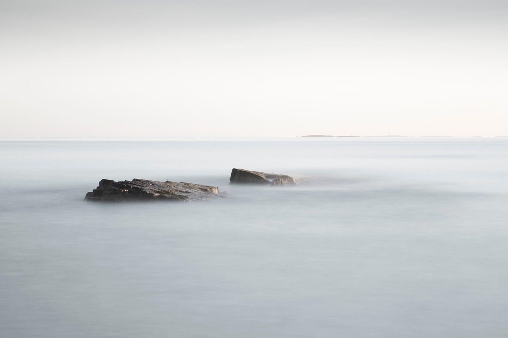

The studio
An independent software studio of one, making calm, steady instruments for everyday life.
Founded on calm, freedom, healing and overcoming. Each instrument is built slowly, kept local-first, and priced honestly. No ads, ever.

Work
- Urge WalkDecember 2026Ride out an urge with a short walk, a breath or a few senses. iPhone, in development.
- Fitness appIn planningEarly days.
- Christian gameIn planningFor all ages. Early days.
He maketh the storm a calm, so that the waves thereof are still.Psalm 107:29, King James Version